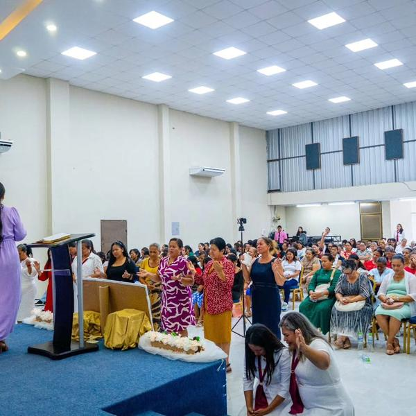
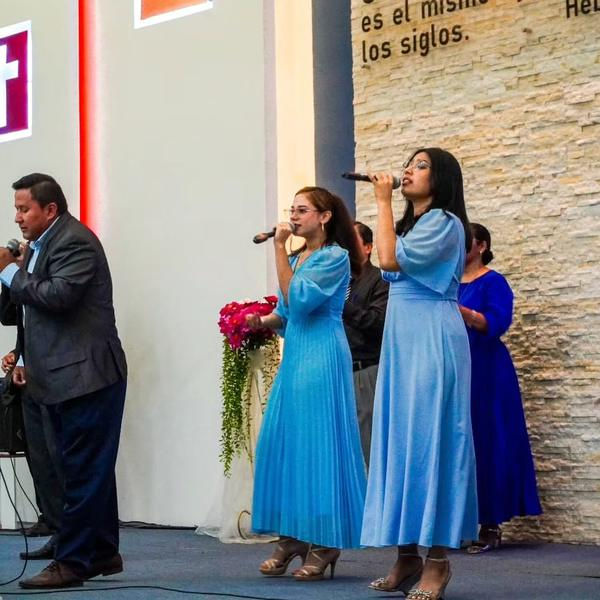

Sábado · 7:30 PM
Jóvenes
Adoración y enseñanza diseñada especialmente para adolescentes y jóvenes.
Conoce JuventudEn Galilea hay un espacio para cada etapa de la vida y un lugar donde usar tus dones para servir a Dios y a los demás.
Adoración y enseñanza diseñada especialmente para adolescentes y jóvenes.
Conoce Juventud
Un tiempo para mujeres de todas las edades. Se alterna semana a semana con el culto de caballeros.
Líder: Marianela Bejarano
Conoce el ministerioHombres creciendo juntos en fe y carácter. Se alterna semana a semana con el culto de damas.
Líder: Mario Alvarado
Conoce el ministerioEnseñanza ordenada de la Palabra para conocer mejor a Dios y los fundamentos de nuestra fe.
Líder: Isabel Picay
Conoce el ministerioNos reunimos en casas de hermanos en distintos sectores de Milagro. Hay un hogar cerca de ti.
Conoce el ministerio
Guiamos a la congregación a la presencia de Dios con música y canto en cada servicio.
Conoce el ministerioEvangelismo en las calles de Milagro y viajes misioneros para llevar el amor de Cristo a quienes lo necesitan.
Conoce el ministerioEscríbenos y te conectamos con el líder del ministerio que te interesa.